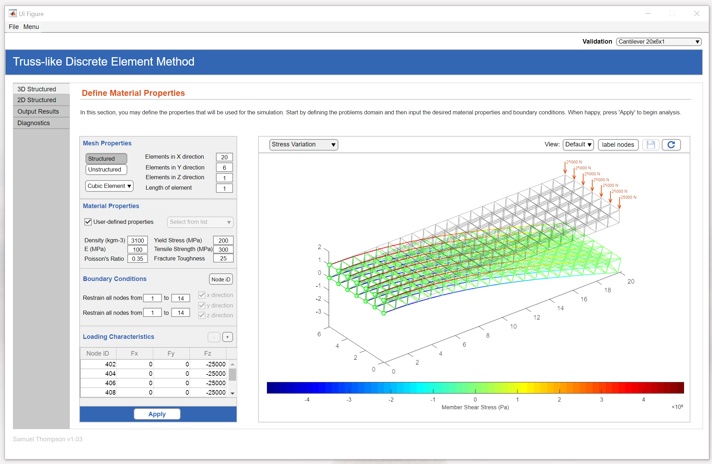
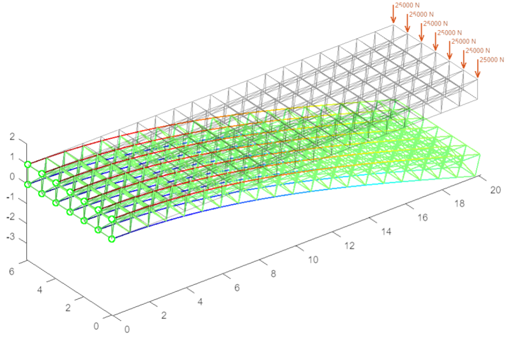

SAMUEL THOMPSON
Portfolio Objects
Here you will find extracts from different pieces of work I have completed during my Master's degree in Mechanical Engineering, my PhD in Machine Learning and ballistics and everything inbetween!
Training Documents
Here I created a training manual compiled using JupyterBook to support my fellow engineers as they make the transition from MATLAB to Python whilst learning some machine learning along the way.https://samph4.github.io/TrainingBook/intro.html
Publications
An Artificial Intelligence-based Hybrid Method for Multi-layered Armour Systems
https://link.springer.com/chapter/10.1007/978-3-030-30355-6_16

Test
Some text
